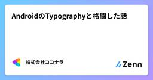
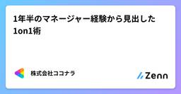
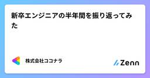
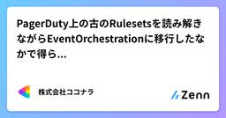
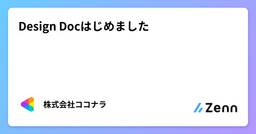
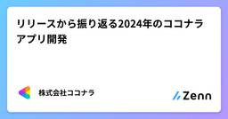
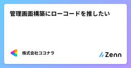
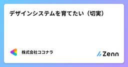

株式会社ココナラさんのフィード
https://zenn.dev/coconala
株式会社ココナラのテックブログ用アカウントです。 ココナラに所属するエンジニアが多様な記事を執筆して公開していきます。 採用情報はこちら → https://coconala.co.jp/recruit/engineer ココナラWebサイト→ https://coconala
フィード

AndroidのTypographyと格闘した話
株式会社ココナラさんのフィード
本記事は株式会社ココナラ Advent Calendar 2024 21日目の記事です。こんにちは。株式会社ココナラアプリ開発グループ Androidチームの藤永です。大掃除の季節ですね。ココナラのAndroidアプリにも過去の負債が色々と存在しており、様々な機能開発と並行して随時お掃除を進めています。ココナラでは最近新しいデザインシステムに切り替える動きがあり、Typographyの刷新にあたって改めてAndroidのTypographyについて調査をしたので、今回はその内容をかいつまんでご紹介します。 TypographyとはTypographyとは、Headlineや...
21時間前

1年半のマネージャー経験から見出した1on1術
株式会社ココナラさんのフィード
本記事は株式会社ココナラ Advent Calendar 2024 20日目の記事です。こんにちは！株式会社ココナラマーケットプレイス開発部でフロントエンドチームのチームマネージャーをしている じょーじ です。チームマネージャーになって1年半ほど経った私が、メンバーと1on1を実施する中で試行錯誤を重ね得た知見を、自身の整理を兼ねて共有したいと思います。これからマネージャーになる方や、すでに1on1を行っている方の参考になれば幸いです。ここでお伝えするのは、あくまで私個人の意見になります。 1on1の目的私の中での1on1の目的は、以下の3つです。お互いについて理解を深...
1日前

新卒エンジニアの半年間を振り返ってみた
株式会社ココナラさんのフィード
はじめにこんにちは。株式会社ココナラアプリ開発グループ、iOSチームのじょにーです！今回は4月に新卒として入社してからあっという間に半年が経過したので良かった点、反省点を振り返っていきます。 やって良かったこと 会議でたくさん発言すること発言するといっても必ずしもチームや組織の意思決定を推進するような意見をたくさん出しているというわけではありません。例えば技術的な課題についての議論で分からないことがあり、話についていけなくなりそうだった時に『すみません！正直前提の部分が分からなくて教えていただきたいです』と言ってみたり、メンバーが発言しやすくなるように会議開始前に少し...
2日前

PagerDuty上の古のRulesetsを読み解きながらEventOrchestrationに移行したなかで得られたもの
株式会社ココナラさんのフィード
こんにちは！株式会社ココナラ システムプラットフォーム部インフラ・SREチームのクララです。本記事は株式会社ココナラ Advent Calendar 2024 19日目の記事です。また、PagerDuty Advent Calendar 2024 19日目の記事も兼ねています！2025/1/31にEOLが予定されている PagerDuty の Rulesets という機能を、後継機能である Event Orchestration に移行しました。移行に伴い、膨大な数のルールを断捨離・再構成したので、その一部始終を記載します。 はじめに ココナラでのPagerDuty活用...
2日前

Design Docはじめました
株式会社ココナラさんのフィード
本記事は株式会社ココナラ Advent Calendar 2024 18日目の記事です。 はじめにこんにちは。株式会社ココナラ 経済圏共通基盤開発チームのfumiと申します。私たちのチームでは、エンジニアが安心・安全に開発していくためにDesign Docを導入しました。今回はなぜ導入に至ったのか、Design Docによって得られるメリットについて書きたいと思います。 Design Docとは？Design Docとは、システムの設計に関する思想、指針、具体的な設計などを文章化したものです。具体的には、アーキテクチャやシステムの構成、技術選定、テスト方針など、開発に...
3日前

リリースから振り返る2024年のココナラアプリ開発
株式会社ココナラさんのフィード
こんにちは。株式会社ココナラのアプリ開発グループでエンジニアリングマネージャーをしています 中田 (@kun03) です。本記事は株式会社ココナラ Advent Calendar 2024 17日目の記事です。 はじめに私たち、アプリ開発グループでは ココナラアプリ (iOS/Android)の開発運用を担当しています。リリースから2024年のココナラアプリを振り返りたいと思います。 リリースから見るiOS/Androidそれぞれでリリース回数やリリースした施策数を振り返ってみたいと思います。 iOSアプリまずiOSアプリで2024年に実施したリリースは、46回、...
4日前

管理画面構築にローコードを推したい 1
1
株式会社ココナラさんのフィード
本記事は 株式会社ココナラ Advent Calendar 2024 16日目の記事です。こんにちは！エージェント開発部でチームマネージャーをしている大川です。普段は、ココナラテック や ココナラアシスト をはじめとするエージェントサービスや、営業生産性を向上させる社内向けツールの開発に取り組んでいます。エージェント事業では、1年ほど前から Retool というローコードツールで、管理画面や社内向けのツールを開発しています。インターネット上を見ると、ローコードツールを使った管理画面の開発事例はまだまだ少なく、「1年利用してみた感想を共有できれば有益なのでは！？」と思い、執筆してみ...
5日前
LazyVimの紹介 1
株式会社ココナラさんのフィード
本記事は株式会社ココナラ Advent Calendar 2024 15日目の記事です。 はじめにはじめまして、株式会社ココナラでフロントエンドエンジニアをしている@tm_1219と言います。今回はNeovimを布教するための記事を書きます。なぜ今Neovimを選ぶのかというと、手をホームポジションから動かさずに各種操作をキーボードで行うことができるからです。Neovimといえば環境構築が難しいイメージがあり、Vim操作を覚える学習コストも高いのでそれらを理由に諦めた方も少なくないでしょう。私もその中の一人で、Neovim使いに憧れてはいますが、VSCodeをVimプラグイ...
6日前

デザインシステムを育てたい（切実） 2
株式会社ココナラさんのフィード
本記事は 株式会社ココナラ Advent Calendar 2024 14日目の記事です。デザインシステムの構築は難しく、「作る」ではなく「育てる」という発想が大切です。本記事では、弊社ココナラで進行中のデザインシステム刷新プロジェクトを例に、「なぜ育てる発想が重要なのか」をざっくり掘り下げてみました。状況として、デザイン定義としての大枠は8~9割方完成に近づいているものの、実装には課題が山積しています。そのうえで改めて「何が難しいのか」を言語化し、どういうスタンスで進めるべきかという指針を社内の関係者（主にWebエンジニア、一部デザイナー）に共有しました。本記事はその時に書き殴...
8日前

複雑なものを複雑なまま扱う
株式会社ココナラさんのフィード
この記事は株式会社ココナラ Advent Calendar 2024 13日目の記事です。こんにちは。株式会社ココナラに所属しているKです。今日は「複雑なものを複雑なまま扱う」というテーマで書いてみたいと思います。 はじめに私たちは日々の業務の中で、複雑な問題に頻繁に直面します。この複雑さを単純化しようと試みることは、時に問題解決を遠ざける可能性があります。今回は、複雑なものを複雑なまま扱うという視点から、ソフトウェア開発におけるチームのあり方について考えてみたいと思います。 リソースという言葉 リソースという言葉に対して感じる違和感リソースという言葉があります...
8日前
みんなー！ 会計システムってどうしてるー！？
株式会社ココナラさんのフィード
本記事は株式会社ココナラ Advent Calendar 2024 12日目の記事です。 はじめにみんなー！ さまざまなビジネス要求を引き受けざるを得ない関係上、業務ロジックが複雑になりがち、かつ、そんなに表に出る機会がない、かつ、失敗したらえらいことになる、陰の者であるところの会計システム従事者のみんなー！ 今年も無事生き残れましたね。これを寿ぐとともに、来年こそは会計に携わっているのにキラキラエンジニアをやっていきましょうね！DevOps開発グループ/CREチーム会計担当のy.s.です。この記事では今年を振り返ってみて弊社の会計システムの大変さを開示してみると共に、将来の展望...
9日前
フルスタックエンジニア見習いがCursorを使い倒してみた！
株式会社ココナラさんのフィード
はじめにこんにちは！株式会社ココナラココナラ募集部のひびきです。最近の生成AIツールの進化は凄まじいですよね。毎日魅力的な生成AIツールがリリースされていて、どのツールを使うべきか迷ってしまいます。そんな生成AIツール業界の中でも、コーディング支援ツールとして群を抜いて人気なものとしてあげられるのはCursorとGitHub Copilotの2つになるのではないでしょうか？私は普段、Hono, Ruby on Rails, Next.js, Nuxt.js, Go などを使ってフロントエンドからバックエンドまで開発しています。さまざまなプロジェクトを進める中で、生成AIツ...
10日前
Slack WorkflowをDeno Slack SDKで作ってみた
株式会社ココナラさんのフィード
本記事は株式会社ココナラ Advent Calendar 2024 11日目の記事です。こんにちは！株式会社ココナラマーケットプレイス開発部でQAチームのチームマネージャをしているまるです。今回はSlackのワークフローをDeno Slack SDKを利用して開発し、開発フローの一部を自動化した話をします！ 背景まずは背景として自動化対象のフローから説明します。弊社では内部統制上、開発に対する承認をGithubのissueで管理し、Slackにて承認依頼を行っています。そして1つの開発に対して「開発着手」と「テスト着手」の2つの承認をそれぞれ得る必要があります。またそれぞれの承...
10日前
これができればGitHub Actions上級者だ！
株式会社ココナラさんのフィード
この記事は株式会社ココナラ Advent Calendar 2024 9日目の記事です。SREチームマネージャーのよしたくです。ココナラに入ってからGitHub Actionsをレビューする機会が多くなってきました。そこで今回は「わかってるな」と思わせるGitHub Actionsの書き方をいくつか紹介していきます。比較的簡単に「わかっている風」にできるものから記載します。 サードパーティのアクションをコミットハッシュで指定する Not Good- uses: actions/checkout@v4 Better- uses: actions/checkout@11...
11日前
プロジェクトの不確実性を下げるたった3つのコツ
株式会社ココナラさんのフィード
この記事は株式会社ココナラ Advent Calendar 2024 9日目の記事です。こんにちは。世界から法律に関わる悩みをなくしたい高崎です。普段はココナラ法律相談という、弁護士の先生方と相談者のマッチングサービスをつくっています。https://legal.coconala.com/今年も大小さまざまなプロジェクトに関わってきましたが、その中でもこのチームや人は仕事の進め方がうまいな〜とか、なぜかスムーズに仕事が進むな〜と感心することが多くありました。そういった人たちを観察して分かった共通点はプロジェクトの不確実性を下げるのがうまい、ということです。その中でこれは再現性高く...
12日前
AIスタジオのご紹介とストリーミング生成のポイント
株式会社ココナラさんのフィード
本記事は株式会社ココナラ Advent Calendar 2024 7日目の記事です。 はじめにこんにちは。株式会社ココナラの データテクノロジー室に所属しているエンジニアの DO です。二児のパパをしています。かわいい笑顔に毎日癒されています（ただのノロケです 笑）ChatGPTの登場以降、ビジネスシーンでのAI活用が急速に広がっています。しかし、多くのビジネスパーソンが「AIをどのように業務に活用すればよいのかわからない」「適切な指示を出すのが難しい」といった課題を抱えているのが現状です。このような課題を解決するため、弊社は2024年11月18日に新サービス『ココ...
14日前
クエリ一つでGeminiマルチモーダルテキスト生成
株式会社ココナラさんのフィード
本記事は株式会社ココナラ Advent Calendar 2024 8日目の記事です。 はじめにこんにちは。株式会社ココナラ データテクノロジー室所属のエンジニア、 Unseo と申します。趣味はミーアキャット観察です。みなさん、Gemini [1]のマルチモーダル機能、使ってますか？すごい可能性を秘めているのですが、導入ってちょっと大変ですよね。API 叩いたり、環境構築したり…。そこで今回は、BigQuery ML（BQML）[2]と オブジェクトテーブル[3]を組み合わせて、たった一つのクエリで Gemini のマルチモーダルテキスト生成を実現する方法を紹介しま...
15日前
初めてのRailsバージョンアップ経験の振り返りをしてみる
株式会社ココナラさんのフィード
本記事は株式会社ココナラ Advent Calendar 2024 6日目の記事になります。こんにちは。株式会社ココナラ バックエンド開発チームのtoruchanと申しますみなさんはシステムのバージョンアップ対応を経験したことはありますか？私は今年初めてRailsバージョンアップ対応の経験をしました。本記事では私が担当したRailsバージョンアップ対応についての振り返りを行っていこうと思います。 バージョンの差分についてバージョンアップ前後のRuby/Railsのバージョンの差分は下記の通りです。Rubyは2系から3系、Railsは5系から7系への変更を行いました。...
15日前
GitHub Appのインストールアクセストークンを試してみる
株式会社ココナラさんのフィード
こんにちは。株式会社ココナラのシステムプラットフォーム部インフラ・SREチームのかとりょーと申します。この記事ではGitHubのアクセストークンに触れつつ、実際にGitHub Appのインストールアクセストークンを利用してリポジトリをcloneする流れを紹介します。 経緯弊社ではCI/CDのツールの一つとしてCircleCIを利用しています。CIの中で他のリポジトリと連携を行うことがあるのですが、外部サービスなのでGitHubとの認証が必要になります。GitHubの認証にはいくつか方法がありますが、GitHub Appのインストールトークンに触れておもしろかったのでこの記事...
16日前
開発統括として一年の振り返りとこれから
株式会社ココナラさんのフィード
本記事は株式会社ココナラ Advent Calendar 2024 5日目の記事です。こんにちは！最近はロマサガ2、ドラクエ3と、世代どハマリのリメイク2作品に感動しているせっきー（関川）（@k_s_eng）です。今回は、一年の節目ということでココナラスキルマーケットの開発統括としてやってきたことを振り返りつつ、2025年に進めたいと考えていることをまとめていきます。今も試行錯誤をしながらプロジェクトマネジメントをしていますが、共感、疑問、成功体験など反応いただけると幸いです。 開発統括としてのミッションココナラ スキルマーケットの開発統括として、中規模以上の施策について...
17日前